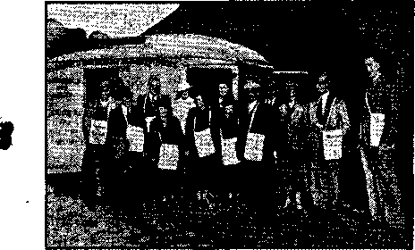
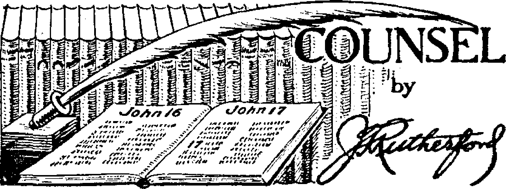

Contents
“Children Crying in the Temple” (Part 2)
Little Folks Have Their Friends
Counsel by J. F. Rutherford
Under the Totalitarian Flag
Expressing Totalitarian Sympathies
British Comment
Renewed Bigotry in Southern Rhodesia
Published every other Wednesday by WATCHTOWER BIBLE AND TRACT SOCIETY, INC.
117 Adams St., Brooklyn, N. Y., U. S. A.
Editor Clayton J. Woodworth
Business Manager Nathan H. Knorr
Five Cents a Copy
$1 a year in the United States $1.25 to Canada and all other countries
NOTICE TO SUBSCRIBERS
Remittances: For your own safety, remit by postal or express money order. When coin or currency is lost in the ordinary mails, there is no redress. Remittances from countries other than those named below may be made to the Brooklyn office, but only by International postal money order.
Receipt of a new or renewal subscription will be acknowledged only when requested. Notice of Expiration is sent with the journal one month before subscription expires. Please renew promptly to avoid loss of copies. Send change of address direct to us rather than to the post office. Your request should reach us at least two weeks before the date of issue with which it is to take effect. Send your old as well as the new address. Copies will not be forwarded by the post office to your new address unless extra postage is provided by you.
Published also in Afrikaans, Bohemian, Danish, Dutch, Finnish, French, German, Greek, Hungarian, Japanese, Norwegian, Polish, Portuguese, Spanish, Swedish, Ukrainian; also special Australian edition in English.
OFFICES FOR OTHER COUNTRIES
England 34 Craven Terrace, London, W. 2
Canada 40 Irwin Avenue, Toronto 5, Ontario
Australia 7 Beresford Road, Strathfield, N.S.W.
South Africa 623 Boston House, Cape Town
Entered as second-class matter at Brooklyn, N. Y., under the Act of March 3, 1879.
“Perfected Praise”
♦ A young woman who has been in the truth just a little over a year and who has been pioneering for the past seven months has a little son who has just started going to school. His teacher is an elderly unmarried Catholic woman. He has not taken part in the flag saluting. A few days ago at the beginning of the ceremony this teacher noticed he was not taking part and she asked him, “Why don’t you salute the flag?” He answered, “I can’t.” She said, “Why can’t you ? Does your mother tell you you can’t?” He said, “No ma’am. Jehovah God tells me.” She was so confounded that she ordered the class to sit down without finishing the flag-salute ceremony.
In another schoolroom there are three little tots of Jehovah’s witnesses and none of the three take part in the flagsalute ceremony. The- other children called it to the teacher’s attention and she told them to hush, saying that conditions in Europe were bad enough and she didn’t want similar conditions here. Recently the principal of the school went to that room and asked the teacher if there were any who did not salute the flag. She called up one of the girls and asked her why she didn’t salute the flag. She told them she could show them in the Bible, and she cited the scripture and quoted it. The principal said, ‘We’ll let you know later,” and walked out.
Doing Justice and Judgment
♦ Doing justice and judgment for the innocent, Superior Court Judge Connelly, at Fall River, Massachusetts, exonerated the father of a thirteen-year-old boy dismissed from the Fairhaven school for failure to salute the flag. The court found that the child’s absence from J school was due to his own conscience and not to any guilty act on the part of the father. Judge Connelly is manifestly a true American patriot and a just judge.
■l
“And in His name shall the nations hope.”—Matthew 12:21, A.R.V.
Volume XXII
Brooklyn, N. Y., Wednesday, March 5,
Number 560
“Children Crying in the Temple” (z« two Parts—Part 2)
To the Board of Trustees of the
Cajon Valley Union School District: Come now the parents, Orville Dunn and Thelma Dunn and George Thayer and Helen Thayer, and their children, Wallace Dunn, Ernest Dunn, Alice Dunn, Edith Dunn, Betty Thayer, Letha Thayer, and Charlotte Thayer, who have been / t/ 7
expelled from this school and denied the privilege of attending because they have refused to violate their conscience by indulging in a ceremony prescribed by this School Board, and request that said children be reinstated as pupils in this school.
These children desire to attend school and their parents desire to send them to school. They have the right under the law to attend the school.
There is no state or national law that requires children to indulge in a ceremony of saluting the flag. Only this Board has made such a rule and this School Board has full power and authority to change or even abrogate the rule. Hence the entire responsibility for the rule is upon the members of this Board.
In the place and stead of the pledge and of the saluting of the flag prescribed by the rule of this School Board, we request that these children be permitted to substitute and to recite the following pledge, to wit:
“I have pledged my unqualified allegiance and devotion to Jehovah, the Almighty God, and to His Kingdom, for which Jesus commands all Christians to pray.
' MARCH 5, 1941
“I respect the flag of the United States and acknowledge it as a symbol of freedom and justice to all.
“I pledge allegiance and obedience to all the laws of the State and of f the United States that are consistent with God’s law, as set forth in the Bible.”
These children are consecrated to the Lord and are therefore God’s children and they are entitled to worship and serve Almighty God according to the dictates of their conscience and not according to the dictates of the conscience of this Board or of any other human creatures. Their first duty is to God, and, in rendering obedience to Him, they are certain to obey every law of the state and nation that is in harmony with God’s law.
This pledge is in full accord with the rule or law which the Lord Jesus Christ r announced: “Render therefore unto Caesar [the state] the things which are Caesar’s, and unto God the things that are God’s.”—Matthew 22 : 21.
This nation and this state claim to be Christian. We assume that the members of this Board claim to be Christians. If Christians, then it is your obligation to obey the Lord Jesus and to teach the children of this school to recognize Almighty God as supreme. If you are not Christian, then you are against the Lord 7 <7 CD
and his Kingdom, because Jesus says: Be that is not for me is against me.’— Matthew 12:30.
Whether you are” Christian or nonChristian, the act of this Board in denying these children the right to attend
school because they will not violate God’s commandment and their conscience means that you are fighting against Almighty God and attempting to compel these children to do the same thing. If these children are compelled to obey the rule of this Board as it has been announced and for which they have been expelled, then the members of this School Board are substituting their own conscience for the conscience of others, which is a violation of the Constitution ft
of the United States and of the State and, above all, is a violation of God’s law.
These children and their parents being servants of the Lord God and His King Christ Jesus, any punishment inflicted upon them because of their faithfulness in obeying the commandments of God and of Christ means that the Lord counts that punishment as inflicted upon himself.
These children are not on trial, but we remind you that the Lord Jesus Christ is now present judging the nations and the people of the earth and hence the members of this School Board are on trial before the Lord. The Lord is dividing all the people into two classes, to wit: Those who are for the Lord and those who are against Him and His Kingdom. What any person willingly does for or against one of the Lord’s servants, he is doing it for or against the Lord himself.
In this connection please note these words of the Lord Jesus Christ which apply at this day to all persons on earth and particularly to those who are in responsible positions, to wit:
“When the Son of man shall come in his glory, and all the holy angels with him, then shall he sit upon the throne of his glory: and before him shall be gathered all nations; and he shall separate them one from another, as a shepherd divideth his sheep from the goats: and he shall set the sheep on his right hand, but the goats on the left. Then shall the King say unto theffi on his right hand, Come, ye blessed of my Father, inherit the kingdom prepared for you from the foundation of the world: for I was an hungred, and ye gave me meat: I was thirsty, and ye gave me drink: I was a stranger, and ye took me in: naked, and ye clothed me: I was sick, and ye visited me: I was in prison, and ye came unto me. Then shall the righteous answer him, saying, Lord, when saw we thee an hungred, and fed thee? or thirsty, and gave thee drink? When saw we thee a stranger, and took thee in ? or naked, and clothed thee? Or when saw we thee sick, or in prison, and came unto thee? And the King shall answer and say unto them, Verily I say unto you, Inasmuch as ye have done it unto one of the least of these my brethren, ye have done it unto me. Then shall he say also unto them on the left hand, Depart from me, ye cursed, into everlasting fire, prepared for the devil and his angels: for I was an hungred, and ye gave me no meat: I was thirsty, and ye gave me no drink: I was a stranger, and ye took me not in: naked, and ye clothed me not: sick, and in prison, and ye visited me not. Then shall they also answer him, saying, Lord, when saw we thee an hungred, or athirst, or a stranger, or naked, or sick, or in prison, and did not minister unto thee? Then shall he answer them, saying, Verily I say unto you, Inasmuch as ye did it not to one of the least of these, ye did it not to me. And these shall go away into everlasting punishment: but the righteous into life eternal.”—Matthew 25: 31-46.
The responsibility of a state or nation rests upon its officials and public servants. A nation or state once claiming to be Christian or servants of God and then departing therefrom comes clearly within the definition set forth in the Scriptures of those that forget God. For 150 years America has claimed to be a Christian nation. The Constitution guarantees freedom of conscience and the recognizing of God as supreme, and the highest ' courts of the land have fully supported that conclusion. At this late date to depart from that time-honored and proper rule and to adopt in its place the arbi-
London Convention of Jehovah’s witnesses, September 29, 1940. (At the time this remarkable picture of Jehovah’s true people was taken London was being bombed day and night by Pacelli’s and Hitler’s demonized flag-saluters.)
trary rules that violate the conscience of Christian people and are against God's commandments means that such is following the totalitarian practice and forgetting God entirely. Concerning this it is written in God’s Word: “The wicked shall be turned into hell, and all the nations that forget God.” (Psalm 9:17) It is better to honor God and live.
By permitting these children to recite the pledge which is herein set forth in the place and stead of the one this Board has prescribed, the same honors God and Christ Jesus and puts this Board in a favorable position before the Lord. We call these things to the attention of the Board because it is our duty to do so, and this Board must bear the responsibility. Respectfully submitted, Orville Dunn Thelma Dunn
For themselves and their children herein mentioned.
George Thayer Helen Thayer
For themselves and their children herein mentioned.
Dated this 5th day of February, A.D. 1941. .......
In the Lord’s providence Part 1 of the story about Jehovah’s little ones crying the praises of His King and Kingdom in the Temple was running while the accounts of their witness in the public schools were engaging the attention of the readers. The foregoing brief, read to the school board of El Cajon, California, by William P. Heath,. Jr., February 5, 1941, fits in so well with this story that it is inserted as above. ..... ■
The school board rejected the pledge submitted, as it ‘permitted the pledger to make his own decision’ as to what is in conflict .with God’s law according to the Bible. Whom would the board have make this decision ? The action of the board is plainly contrary to God’s law and to the Constitution of the'United States. -_ . J.. x i -I -l V . ■■ > > r - . ■ ■ ■■ F. ■ . -fc I- ■ ---■ d ■ . " - - " L ... . n. . rr - j -* ■ - i -- X \ . ■■ ' " "■ 1 ■ ■“*
- '■ ' . -■ -■ _ . . _____ . .
hi -1-" ■■■ .A.....'.11.1 . ■II?1 ■ II ■■
A Mother’s Joy in the Lord < children are securely set in the way of
Nothing could make a true mother as life. Mrs. Irene Newcomb, Georgia, rejoyful as to know that the steps of her fleets her joy in her letter below: ■ ; •
I have four children: two boys who are 10 and 12 years old and two little girls who are 7 and 8 .years old. For over two years now they have been regular publishers in the service. They have their own territory and work it by themselves. All of them are making back-calls on the ones that they find interested. The oldest boy has been holding Model Study for some time. The little girl that is 8 years old walked last month about two miles to a place where she had found interest and carried the phonograph and a bag of books and started a Model Study alone.
I never would have thought that she was strong enough to carry the phonograph so far, so I was surprised to come home from my work one evening to find that she had undertaken it alone. I left everything then and went to help her home, and finally found her on her way home. There was a look of joy on her face and she didn’t look at all tired. She said, “I just walked along and thought about some scriptures, one of which is ‘The fear of man leadeth into a snare’, and I wasn’t a bit afraid.” I thought surely the ‘joy of the Lord is your strength’.
Pioneer home No. 1, London—third pioneer ' home “bombed” out in London
Immersion at Wellingboro, England
In the territory where the children work they are the talk of the town. All the people are simply amazed to see children that know so much about the Bible. One woman with whom they had been holding a study said, “I have been reading my Bible for years and I am now 40 years old and have been teaching Sunday-school class ever since I was a girl; but I never had my eyes open until these little children came here and helped me to understand what I read in my Bible. I found things I never before knew were in the Bible, and I just thank God for sending these little children here. It just goes to show,” she said, “that the Bible is true where it says, ‘and . a little child shall lead them.’ ” She told the zone servant and me these things when we made a call on her. She explained how they conducted the study, and it was just as well as anyone could do it. She said that if she didn’t understand -what a scripture meant they explained it to her. I guess all of you can imagine my joy! Now my boys are wanting to be pioneers!
The next is about a thirteen-year-old boy in Oregon. Agnes L. Brown, pioneer, writes of him:
I recently started a Model Study in a Catholic home where there is a thirteen-year-old boy. Here are some of his comments: “If Jesus established the Roman Catholic Church when < on earth, as it is claimed He did, why does not 4 the Bible tell about it? It tells about everything else that He did.” Also, “Seeing that the pope is so rich, why does not he give some of that money to the missions in place of begging
Theocracy publishers, Peterborough, England
from poor people all of the time ?” And, “Why does the ‘Church’ make the people fast for many hours before mass, whereas Jesus and the apostles ate their supper just before partaking of the bread and wine.” When we were reading the Scriptures concerning Jonah in the fish’s stomach, “Out of the belly of hell cried I,” and I had explained that that particular place was a dark place, this lad made the comment, “There wasn’t any fire in the fish’s stomach.” He capped the climax by volunteering, unasked, to go out on the street corners tomorrow in the magazine distribution, and has begun to attend Watchtower and service meetings. What a joy it is to help the “other sheep” of the Lord into the Kingdom!
A Mother in Massachusetts Writes:
I do not want to take up much of your time but I would like to just tell you about my family. My boy is six years old and he has been a company publisher for a year. Shirley, my girl, is eleven and she has been a publisher for three years. Delore, my husband; has been a publisher for three years, too, and before that he was Catholic, Shirley, Roger and Delore are going to be baptized at the assembly at Hartford, Connecticut. I study with my children every morning, and because of their little daily study they are able to answer questions at our studies at class. I have a pioneer brother here for a while. He sleeps here. I have been a publisher for six years, and I have been able to get my sixty-hour quota ever since we had that quota, except when I was in the hospital. Sometimes it is a little under, but MARCH 5, 1941
other times it is a little over. I was baptized five years ago. I had a gift of eight dollars given to me a short while ago, and I bought this secondhand typewriter to use in my back-call work.
My children do not salute the flag. When Shirley was in the second grade the teacher threatened to expel her if she did not salute, and told her if she stayed out of school her mother and father would probably have to go to jail. She came home as white as a sheet. I told her to do just as she thought best, but I had told her what was right. She did not salute and the teacher did not bother her again. Last year in the fourth grade she had a different teacher. One morning she asked Shirley why she did not salute the flag. Shirley said, “Because I salute only God.” Then the teacher made the children salute again and again, and after each time asked Shirley why she did not salute. She finally gave up trying to make Shirley compromise.
We moved about two months ago, and because both my children had taken their stand concerning flag saluting I decided to go and see their new’ principal myself. I had taken
Theocracy publishers near a dentist’s establishment in Loikan, South Shan States, Burma
7
them the first day and met the principal, and Shirley had gone to her room. I had just met Roger’s teacher. I told the principal that I would like to speak to her a moment. I knew there was no use to go easy, so I said, “We are Jehovah's witnesses, we do not salute the flag, and I would like to have my children excused from saluting the flag." Imagine my surprise when I saw her face all light up when she said, “That is perfectly all right, I have read all about you people. I know you respect the flag, but feel that you cannot salute it." Then I had a good opportunity to witness to her. (She is Protestant, but the first grade teacher was standing there, too, and listened to all I had to say. Then the principal turned to Roger’s teacher and said, “This little boy will not salute the flag." The teacher is Catholic, but she said, “That will be all right; I will put him in the back row so the children will not bother him." She smiled. Shirley was called into the office, and the principal told her that she need not salute, just to stand at attention.
Shirley’s teacher has a radio in her room and every day the children listen to the news. There has been quite a lot about flag saluting on the radio lately, and the other morning, after they had heard about some of our children who will not salute the flag on the radio, one child got up and said, “Anyone who will not salute the flag should not be allowed in this country." The teacher agreed, and a general discussion followed. Of course, it was all done for Shirley’s benefit, but she did not mind. Evidently that teacher does not feel the same as the principal about it. (She is Catholic. ) The other day it came Roger’s turn to hold the flag while the children salute, and the teacher said, “Roger, it is your turn to hold the flag— Oh, no, you do not have to hold it, perhaps your mother would not want you to." I don’t suppose it would have made any difference if he had, but I let it go.
I am so glad-1 went to the principal. The results certainly, showed the Lord’s blessings, and it makes us realize more fully that obedience is the only thing that is worth while.
Girls learn to be courageous, and have to be for the part they play in life, but the boys are courageous, too—the right kind of boys. Is there anything in the world more precious than a twelve-year-old boy? Think of all the honesty, the courage, the determination, the possibilities, locked up in that frame. That was the age when Jesus wanted to get going; wanted to do something with His life; wanted to know the truth and to live it. Also, and this is of immediate interest, it is the age when a twelve-year-old boy in New Orleans (Edward Vanderdoes) made up his mind it is contrary to the Scriptures, and therefore contrary to God’s will, for him to salute or bow down to any flag. His older brother, of admitted excellent habits, and a pioneer witness, agrees with his younger brother. The parents disagree. They insist that the younger boy must violate* his conscience or be imprisoned. He stands by his right to worship God as seems to him to be right. It is a thrilling situation. The teachers, without any law and without any reason, are for the new standard of citizenship, that one must worship the flag, and place it above obedience to Almighty God. The boy says he will not return to their instruction. God is as able to take care of him as of Daniel in the lions’ den.
Jehovah counts that done to His people as done to himself. “In all their affliction he was afflicted" (Isaiah 63:9), and so there was a certain consistency in the insulting headlines of the Boston Post, referring to experiences of Richard Judson : “Boy of 13 takes jail sentence. Jehovah gets four days instead of $2 fine." Police wanted to crawfish but did not get the chance, in bigoted, liberty-hating, clergy-ridden Massachusetts.
A letter received from a town in southern Germany read as follows: “We are some young folks, grown-up children of Jehovah’s witnesses, 16 to 20 years of ( age, and we mutually exhort one another to love not our lives unto death.” Biblical literature is circulating from hand to hand, and they take great pains to copy
it by hand even as was done before the invention of the printing art. The Gestapo is not unaware of this. We mention this in order to show how precious to these people is the instruction of God's Word which they seek, although in so > doing they risk their liberty and their lives. It is the source of their strength. —1941 Yearbook of Jehovah's witnesses.
The young pioneer Eleanor Poisel will be surprised when she sees this letter of hers in Consolation, but the editor came by it honestly. It was addressed “Dear * Ma and Pa"; so if you are a dear ma or pa you can think of Eleanor as your little girl and imagine how you would feel if she wrote you like this:
The Lord has blessed my efforts far beyond any expectation. The Bible says if we are faithful and diligent in the Lord's service, He will pour out such a blessing that we will not be able to contain it! Those words sure are true; for recently Bernice and I have experienced UNSPEAKABLE joy !
It was about two weeks ago as Bernice and. I were trudging miles back and forth in our business territory that we determined if it were the Lord's will we would have bicycles by spring and would work rurals. The Lord says that before we even ask our prayers would be answered! and sure 'nuff. Next day we got a notice from the Society and Sr. Myrtle wanted two pioneers to work with her one of whom drives a car. Bernice didn’t have her license renewed, so I am the one who drives!! >
Now there, the following is the truth, and not a tall story! Every Saturday afternoon we leave for Washington for magazine work. The Government workers leave their cages at 1:00 p.m.; so we get stationed on a corner where a building leaves out and go to work! Imagine me shouting, “Read the uncensored news! Exposes religion as a snare! Read why <ji the newspapers are afraid to print these facts!
Only five cents a copy !" -
Well, today I was stationed on the corner of 14th and Pennsylvania with my sign under left arm and stick running into left pocket of jacket. Magazines are in right hand. I was calling my magazines when a policeman walks up and sez—“Ya’ can't do that here! You've gotta get out! This is a restricted area!"
Me—“Where can we do this work? Is all Washington restricted?"
He—“Up beyond New York Avenue. But not here."
Me—“Yes, but there is a newsstand right there, and that man is- selling newspapers. What corner can I stand on ?"
He—“You've gotta have a permit!" (He roared)
Me—“But I have permission of the Supreme Court of the United States to do this work."
He—“Where is your permit. Let's see it?" (Was he angry!)
Me—“I have a right to do this under the Constitution, of freedom of the press."
He—.“Well, if you don't go away, I'll have to take you in. That's all there is to do. If you sell another magazine you'll have to tell it to the judge."
Me—“Well, I'm sorry, but you'll have to press the case."
This is the total conversation between two times that I was asked to stop. The first cop rounded up another cop and held a conference, and then the second cop thought he would scare me, and acted real tough. Ah, but they can’t surmount the strength of the Lord! Those words just rolled out of my mouth— and I finished my work, and am free and at ease tonight.
(This was the first time I was even ever approached by a policeman. What will I say when I have more experience?)
In fact the one cop stood across the pavement and watched me for about ten minutes. While he was there, I yelled even louder, “The fear of man bringeth a snare." His face turned all red, he couldn't take it any longer, and he walked away. Give praise to Jehovah!
All in all, I placed 13 magazines—12 Watch-tower and 1 Consolation.in 1½ hours. ‘Who are they to defy the armies of the living God ?'
No one really knows what the joy of the Lord is until he has participated in this glorious magazine work.
I sent in a subscription for Consolation for
Sis for a half year. Don’t tell anybody, but maybe she will glance over an article once in a while in this uncensored newspaper and learn something worth while. Maybe she will have her eyes opened, and if not soon, then she is lost, because the last Informant brings out that Armageddon is very near. Maybe Consolation will do the trick and she might renew her subscription in half a year when it expires. At any rate, may the Lord open her eves before it is too late. If she only knew what l <■'
I w’as doing in the seat of the United States government, her hair would stand up on end -and she would know what it is to have the strength of the Lord, and to despise shame and fear of man!
Little folks have their friends. The big Jehovah's witnesses feel a tenderness toward the little Jehovah’s witnesses that cannot be explained; it goes too deep. But their teachers are often real men and women. Just as this was written, in comes a letter from a mother in Iowa in which she says:
This is the experience of a ten-year-old boy in school that took his stand in regard to participating in Xmas program. Duane asked his mother to write a note explaining our viewpoint towards celebrating Xmas. The mother did so, closing the note by saying she would appreciate it if the boy would be excused, as it was from a sense of giving honor unto God.
The child was excused, and in turn the teacher prepared a story that was given by one of the pupils. It explained that the birth of Christ did not come on December 25, and that Christ had not told us to celebrate His birth, but His death. That people had chosen the date of December 25 and made it a holiday to celebrate His birth. Upon learning that Duane was not going to take part in the program one bothersome boy was told by the teacher (who was principal of the school) in polite phrase to mind his own business.
Besides their parents, and other witnesses for Jehovah, and their teachers, all the little folks that belong to Jehovah have Jehovah himself for their friend, and you have to have Him for your friend to know all that means. A contributor, a Nebraskan, writes:
We were at a funeral. Everyone was quiet and waiting for the body to be brought in; the minister was in his place; the silence was broken by the loud sobbing of a grandson of the deceased woman. As the boy continued to *
cry, my boy, seven years of age, leaned forward and, before I knew what he was doing, called the other boy by name and said, “Don’t cry any more; your grandma will come back soon and then she will be all well too, so you don’t need to cry.” “How do you know she will come back again ?” asked the boy between his sobs. “Well, the Bible says so,” answered * the boy; and, due to the tense silence, I am sure that most of the people heard the conversation. A few words of truth from a child brought more/comfort than all the smooth words of the modern Pharisee who gave a formal discourse afterwards.
*
Roy Lee Crauthers
Roy Lee Crauthers, ten-year-old Jona-dab, Asra, Oklahoma, lay dying last winter. A short time before his death (pneumonia), he said to his mother, “Mama, do you think I will get well?” The mother, who had been assured there was no hope, said, “I don’t know, son; do you think you will?” The boy continued, “Mama, we are coming back, aren’t we?” The mother replied, “Who is coming back ?” And the boy replied, “People who believe in God.” And then he went to sleep, to awaken here in a time of joy and peace and love and honesty and truth and life. On page 5 of Consolation No. 559 you will find the only picture of him. It is the first one on the page. His mother wants it back. She shall have it, and other mothers and fathers too, so that they may teach their boys and girls the truth as Roy Lee was taught it, and find the ultimate way to life as he found it.
“Except ye be converted, and become J as little children, ye shall not enter into the kingdom [which is from or out] of heaven.” (Matt. 18:3) That holds for all.
THE END
Italians in Northern Africa
♦ It is but natural for Italians to talk in terms of the Roman Empire, and to aspire to make the Mediterranean an Ital-Jian lake. Colonizing of Northern Africa has been going on for years and the Italians have made great improvements. Since the seizure of Tripoli from the Turks in 1911 the population of the city increased from about 30,000 to five times that number. On the Dodecanese Islands, 400 miles from Alexandria, the Italians have a strong airplane base and 55,000 troops, now cut off from supplies except by air. All vessels of British registry were early warned to stay out of the Mediterranean, and shortly thereafter all civilians were removed from those portions of Egypt adjacent to Libya. There is a great force of British convenient to Egypt, Suez and Palestine.
Although this item is headed “Italians in Northern Africa”, it is not certain there will be any but prisoners left when Consolation readers get this issue. British mopping up of the Italian empire is going forward with such rapid strides that the Italians are being captured by tens of thousands. In the successes of the British the Free French armies under De Gaulle have had a share, making a spectacular drive across the Sahara into Libya’s back door. The organization of a Belgian army of 90,000 men is expected to play an important part in further military developments.
Italian bases in Northern Africa have been occupied by the British in rapid succession. Sidi Bar rani was taken December 11; Salum, December 16; Bardia, January 5; Tobruk, January 22; Derna, January 30; Cirene, February 4; Ben-gazi, February 6. Italians, disgusted, they were burning pictures’ of Mussolini when quitting Bengazi.
Suez Canal Company in a Bad Way
♦ One of the most profitable companies in the world, Suez Canal Company, is now in a bad way, for the reason that it has almost no business. Ordinarily it takes in about $37,500,000 a month, or more than a million dollars a day. It has 5,000 regular employees and several thousand laborers that are paid by the day and there are about 200,000 persons in Port Said, Ismailia, Suez and Port Tewfik whose existence depends upon its operation. The canal is nominally controlled by France, but the British have the most shares.
Cannibalism in Western Africa
♦ Cannibalism continues in Sierra Leone and Liberia, in western Africa. The victim’s selected are usually children and elderly natives. Hearts and livers are boiled and eaten and the rest of the bodies are boiled down for religious purposes. The cannibals in Liberia drown their victims by pulling them under the water. Primitive cannibalism and modern labor strikes broke out simultaneously.
No Italian Mulattoes
♦ To try to prevent the Italian settlers in Africa from ever having a mulatto problem there are strict laws against marriage of Italians with Africans; they must not frequent resorts set apart for natives; they must not do unauthorized work for them; and they must not become intoxicated and thus lower white prestige. Such mulattoes as have already obtained are counted as natives.
Camouflaged Rifle Barrels
♦ The latest thing in camouflage is rifle barrels on which the sun cannot glint, used by British, Australian and New Zealand troops in Egypt and the Near East. With brown helmets and brown uniforms the units of infantry and artillery are indistinguishable in the desert at a short distance.
Scattering Seeds
♦ In His wisdom the Creator has provided a multitude of ways whereby the earth is fitted for the habitation of His creatures. Dispersal of seed is not the least important means of providing food, shelter, and raiment for mankind. The seed of the New Guinea maple tree affords a unique example. Each individual seed is about six inches wide, comprising the pod containing the embryo and wings of fiber, finer than spun silk and exceptionally light.
When the seeds are ripe, they glide off from the parent tree during a breeze, and may travel for hundreds of miles before they fall to the ground. They have been caught on boats many miles out to sea. Gone with the wind.—Australian Consolation.
Topatoes Have No Starch
♦ The new fruit, grown on the roots of tomato vines, and which are called topatoes because they are a combination of tomatoes and potatoes, produced by grafting tomato vines to the original potato plants, are starchless.' For the present, the new fruits are grown in gravel, nourished twice a day with certain chemicals. As these new fruits will hardly increase the weight of persons consuming them, and may have desirable flavors of their own, there is a possible great future for them.
Man Becomes Hay Burner
♦ Man has joked at the horse, calling it a “hay burner”, but now he is liable to become a hay burner himself. Three men have developed a powdered grass which can be added to all kinds of foods, and they claim that twelve pounds of this grass, eaten in the course of a year, will give the man more of the life-giving vitamins than the 340 pounds of fruits and vegetables which he will eat anyway if let alone. .......
Europe’s Food Shortage
♦ It is claimed that food production in Europe, due to mobilizations, wars and bad weather, is down 35 percent and that it would take five food ships a day to make up the shortage for France alone. It is probable that millions of people will starve in Europe before food can reach them. Famines constitute one of the signs of the “end of the world”, and increasing food shortages may be expected as the day of final reckoning approaches. Yet in all this man has but himself to blame.
Electric Fences
♦ It is claimed that at a cost of ten cents a month for electricity, and a cost per mile of about half that of a fence made of four strands of barbed wire, an electric fence of one or two strands of wire can be installed which will make any horse keep away from it after one shock and any cow after three shocks. There are already over a hundred concerns engaged in making the gadgets needed.
Two Days Before Full Moon
♦ Carefully kept records of plantings of various crops support the argument that the best time to plant is two days before the full moon, and that whether the moon is showing or not. The theory is that as the pull of the moon draws up the sea so it also draws up the water that is in the soil, from a level below the plant roots, and therefore rich in the things a plant requires.
The Papaya Melon
♦ The papaya melon, which grows on trees in Florida, is now becoming known all over the United States, merely because one observing man from the North observed the pleasing flavor and concluded the juice, not the melon itself, could be transported profitably. Everywhere the juice is advertised it becomes instantly popular.
Blessed Are the Merciful .
♦ “I killed three red howler monkeys. One bore her baby upon her back. When I killed the mother, the baby clung to her I corpse, and we had trouble in detaching ' it. We tried to bring the baby up, but it died. The last monkey I killed was a red howler. I was inexperienced, and allowed my party to run out of food. This, too, was a female monkey with a baby on her back. The baby was a large, fat one, and contributed to her mother’s death, by deterring her in her flight. Most of the monkeys scampered away, but this female with the large baby on her back moved more slowly and I shot her. She fell to the ground wounded. I aimed my gun at her to finish her. She crawled toward me, wringing her hands, while tears streamed down her face. Then she died just as she reached my feet. I shall never forget the expression in her eyes, as she so palpably besought me to spare her. That happened fifteen years ago; I have never killed a monkey since.”—Pages 73-75, The Jungle Book.
More and More Fur Farmers
♦ More and more people are going in for fur farming, and making it pay, too. In the year 1938 about 20 percent of all the furs sold in the United States, valued roughly at $13,000,000, were taken from animals raised in captivity. They ineluded 300,000 silver fox pelts and 200,000 mink pelts. The use of furs for clothing is not Scripturally prohibited, but it will always seem regrettable that wild creatures must be restrained of liberty and lose their lives to furnish man’s necessities, not to speak of luxuries. In the Millennium, as in Eden, animals will not need to suffer to supply the wants of jjj man. There will be other ways to meet $ them.
More Twins in Canada
♦ This time it is not the Dionne quintuplets. They are now young ladies of the
MARCH 5. 1941
average age of six years. The twins this time, two pairs of them, are the children of Mrs. Antelope. They live at the Ne-miskam National Park in Alberta. Antelope are the fastest things on legs. An odd thing about them is that they can and do signal to their own kind that the time has pome to run and to step on it good and fast. There is a white patch of hair on the rump which the antelope has the power to make erect at will. As soon as the antelope is scared by something, he or she shows two double disks of pure white on the rear end. Meantime the front end is so far ahead that there is no chance even to see what it looks like.
*
Goats Need Three Milkings
♦ Goats need to be milked three times daily. They give from three to five quarts daily, but some prize goats produce seven or more. Butter can be churned from the milk, but no cream forms on the top "when it is left to stand. New York city, which makes use of 3,500,000 quarts of cows’ milk daily, consumes only 250 quarts of goats’ milk, all from three small dairies.
Deer Falls 268 Feet and Lives
♦ At Snoqualmie Falls, Washington, a doe out for a swim got caught in the river and went over the falls, a drop of 268 feet. Charles Lewis and others regretfully gathered a party together and went below the falls to recover the body. They found the doe sunning herself on the rocks, a little bruised, but no bones broken.
Texas Longhorns Disappearing
♦ The native cattle of Texas, known as “longhorns” because the horns continue to grow from year to year, and have even been known to measure eight feet from tip to tip, are rapidly disappearing. They are especially susceptible to the dreaded Texas fever tick.
Siam’s Monk Business
♦ The Buddhist monk business is one of the principal industries of Siam, now called Thailand. There are now in the country 17,408 monasteries, making one monastery for each 800 people. The number of monks reaches a total of 150,213, with 75,079 as novices, so that one person in 64 is either a monk or a novice. Thus one person in 64 has to be maintained in the country’s chief religious racket. It would seem that nobody would be so foolish as to teach that what Siam needs is more religion, yet that is the politician’s cry today—‘"Give us more religion.”
Ducks as Insect Destroyers
♦ Javanese in the Dutch East Indies make an excellent living with trained ducks, which travel the highways. There are in some cases 500 to 600 ducks, which are in charge of herdsmen. They are divided into groups, each trained to follow its own flag, carried by the herdsman. The mission of the ducks is to gain employment in the farms and plantations along the road, eating up the worms, slugs and snails, and so cleaning up the land, which they also fertilize. The eggs they lay are sold in the market place of each little village along the route.
Reason for Being Headhunters
♦ An American Negro who speaks six languages, and who is spending his life in the Philippine Islands, trying to teach the headhunters something of Christianity, claims that some of the recent beheadings were caused by professed Christians pushing the natives out of the lands long known by them as their own fishing and hunting preserves. Shoved into the forests, where they could not make a living, the headhunters retaliated against the hypocrites that had robbed them.
Choked a Wolf to Death I-
♦ In pursuit of his duty David did not hesitate to engage and to slay both a lion and a bear, nor does he fail to give Jehovah the credit for his deliverance. But in the account (1 Samuel 17:34-37) shows what a courageous and powerful man can do in an emergency with even a powerful wild beast. In Persia, in the year 1940, a wolf sprang at an unarmed forester, his donkeys took to flight, and he stood his ground and literally choked the hungry wolf to death with his bare hands. He then ran after his frightened donkeys, brought them back to the forest, finished his woodcraft, cut off the wolf’s pelt and took it home and nailed it up.
Jews Dismissed in Syria
♦ Hitler’s inhuman treatment of the Jews follows in every land that comes under his control. His puppet Vichy government, under nominal control of Petain, and therefore in control of Syria, caused the dismissal of Jews in state posts even in that far-off land. Hitler’s partly Jewish ancestry (a fact he seeks to hide) is believed to lie at the bottom of his terrible antipathy to all Jews.
A Fatal Mistake
♦ Four cows on a rubber plantation in Perak, Malay States, made the last mistake of their lives when they mistook a bucket of latex for milk. They swallowed the latex, and a veterinary surgeon stated, when the cows died two days later, that he believed that the substance had coagulated into rubber in the animals’ stomachs.—James A. Williams.
Mesopotamia to Be Irrigated
♦ Mesopotamia will hereafter be irrigated by a barrage dam along the Tigris river. This dam, which is 1,615 feet long, and which has 56 mechanically operated gates, took 16 years to build and cost £1,120,000.
A Voice from Long Bay, Sydney, Jail
♦ In the morning a man came to me and asked, “What for you here? You drunk?” I said, “I not come here for drunk. I am Jehovah's witness, true Christian. I’m persecuted here today for witnessing in the street to my Lord’s name.” The man said, “That’s funny to me; what about the Salvation Army and the Roman Catholic processions?” I say to him, “That all belongs to the Devil. The Devil doesn’t want people to hear the truth.” the man then said he have Bible in jail with him. I tell him I show him from Bible where Jesus Christ comes back to earth, and show him twenty-fourth chapter of Matthew. The man read and said, “What for the Devil put you in jail?”
At nighttime warders come into cell and shook all blankets; one shake them and other ask, “Can you see any literature?” Then they search me but find nothing. All time I have Consolation magazine down my stocking, back of my leg, so I laugh when they go away. I proved the Lord was with me in jail. He made me happy because I find a good man, a prisoner, inside jail. He gave me Bible and another book, and I witnessed to him for Jehovah’s name all the time.
Returning back to Central Police Station after six days for my money and belongings, the police officer said to me: “I don’t think you go out in the street with that publication again.” I say, “Who stop me? I witness for my Lord’s name. That publication contains the Lord’s message.” The police officer said, “That’s only a joke.” So I say to him, “That’s not joke; that’s truth. You think I go to jail six days for a joke? No fear!”—An Australian of European birth, as narrated in Australian Consolation.
This Flag-Saluting .
♦ Efforts are being made in New Zealand to bluff, frighten, or stampede the Government into issuing an edict making flag-saluting in schools compulsory. So
MARCH 5, 1941
far, however, the rulers have held their hand in the matter while the Education Department suggests that in teaching the young “ . . . the narrow nationalistic interpretation of history should be avoided . . . there should be sedulously cultivated a strong faith in a more peaceful, harmonious and prosperous world . . . national songs of all nations can be used ...” Looks like a jump on jingoism.—Australian Consolation.
Sydney Mayor Not Interned
♦ Australian Consolation notes the singular fact that though the Sydney mayor went far out of his way to show every possible discourtesy to Judge Rutherford, the world’s outstanding opponent of totalitarianism, and followed that up by immediately thereafter extending every possible fawning courtesy upon the German spy von Luckner, yet for some strange reason he had not been interned. No doubt the protecting arm of the Roman Catholic Hierarchy has been thrown about him. The Hierarchy has Australia well in line. England is wiser and has not, as in Australia, permitted the banning of the work of Jehovah’s witnesses to please the Roman Hierarchy, which is actually a sinister “fifth column” against democracy.
Australia Means Business
♦ Australia means business about the war with Hitler, as may be judged from the fact that by the middle of 1941, it is estimated, at least 150,000 persons in that country will be engaged, directly or indirectly, in making munitions with which to prosecute it.
Australia Getting Religious
♦ Australian Consolation records the glad boast that at a church dance there were sixty young people, and that four of them actually came out to church the following Sunday. This latter item was left unexplained.
At the Bier
NO MAN can properly charge a money fee for conducting a funeral. For such a time of sorrow it is a great privilege to speak the truth to the honor of God and for the comfort of the sorrowing ones.
Is it not necessary that a religious clergyman officiate at a funeral? and, if not, who may officiate? It is not necessary for a clergyman to officiate. Any man who loves God and His Word, the Bible, may serve at a funeral; and a good man should be glad to do what he can on such an occasion to inform the people of the truth and to show them a reason why they should not sorrow as others who have no hope.
Probably the saddest time in one’s life is at the funeral of a loved one. If the survivor is the wife, the burden of the widow is often greatly increased by what comes to pass at the funeral. By the time those who serve at the funeral get their pay then little is left for the poor woman and her children. The sorrow of the surviving relatives is often increased by the words of him who delivers the funeral discourse. If the deceased was not a member of an organized church, words to the following effect are often spoken at the funeral: “This man died outside of the church, and his soul is now in eternal flames of torment.” Not only is such a statement false and adding to the sorrow of the surviving relatives, but the same is a gross defamation of God’s name.
The Bible plainly teaches that funerals should be conducted with a view to bringing comfort to those who mourn; and only the truth can bring comfort to such.
16
If the deceased is a child, the religionist officiating at the funeral often says that the child is not dead but is with the angels in heaven, and that God wanted the child and He took it. Such a statement also is false; and while it might be made to bring comfort to the surviving . mother, it has the opposite effect. The 1 mother reasons: “Why should God want my child, and why should He bring such great sorrow upon me merely to please himself?” Furthermore, if it is good for the child to die, why do we not all die when children?
What may properly be said at the funeral ? Should the deceased be lauded and extolled because of his supposed virtues ? No, because that would do no good; even as flowers at the funeral do no good for the dead. “The dead know not any thing.” The funeral is an occasion to tell those present the reason why death has taken away this creature, where he is, and what hope there is for him to live again; and these truths are found only in the Word of God.
Why do men die? The scriptures answer that Adam, from whom the entire race descended, violated God’s law and was justly sentenced to death, that all his children were born after he was under such sentence, and hence all were begotten in sin and shapen in iniquity, as the psalmist has stated in Psalm 51: 5. Also, in Romans 5:12, it is written: “By one man sin entered into the world, and death by sin; and so death passed upon . all men, for that all have sinned.”
Is the dead conscious anywhere? and, if so, is he suffering? Even though he were a bad man, yet Ecclesiastes 9: 5,10 is true: “For the living know that they shall die; but the dead know not any thing, neither have they any more a reward, for the memory of them is forgotten. Whatsoever thy hand findeth to do, do it with thy might; for there is no work, nor device, nor knowledge, nor wisdom, in the grave, whither thou goest.” Also Psalm 115:17: “The dead praise not the Lord, neither any that go
CONSOLATION
down into silence.” These scriptures show it would be impossible for a dead man to be conscious and undergoing suffering. Children at death have not gone to heaven; and in proof of this Jeremiah 31:15-17 reads: “A voice was heard in __ ._ F Ramah, lamentation, and bitter weeping; Rah el weeping for her children refused to be comforted for her children, because they were not. Thus saith the Lord, Refrain thy voice from weeping, and thine eyes from tears; for thy work shall be rewarded, saith the Lord; and they shall come again from the land of the enemy. And there is hope in thine end, saith the Lord, that thy children 7 ■ *
shall come again to their own border/’
Is there hope for the dead that they shall live again? Yes, there is, because God promised to redeem man from death, and He did-so by the sacrificial blood of Christ Jesus, which is a guarantee that the dead shall live again. The apostle Paul, rejoicing in the great privilege of the Christian to comfort those who mourn, wrote, in 2 Corinthians 1: 3, 4: “Blessed be God, even the Father of our Lord Jesus Christ, the Father of mercies, and the God of all comfort; who comforteth us in all our tribulation, that we may be able to comfort them which are in any trouble, by the comfort wherewith we ourselves are comforted of God.” Then, addressing his brethren in Christ, because of their sorrow resulting from death of loved ones, he wrote: “But I would not have you to be ignorant, brethren, concerning them which are asleep [not conscious anywhere], that ye sorrow not, even as others which have no hope. For if we believe that Jesus died and rose again, even so them also which sleep in Jesus will God bring with him. Wherefore comfort one another with these words.”—1 Thess. 4:13,14,18.
At the funeral is a proper occasion to point out that the resurrection is the hope for the dead. The resurrection of the dead being true, then the doctrine that they are conscious in a torment hell or in a “purgatory” is entirely false?
“Resurrection” means the raising up again to life. God sent His beloved Son to the earth, and He died and bought the light to life for obedient man that believes, that he might live again. Hebrews 2: 9 states that Jesus Christ, by the grace of God, died for the benefit of all believing men; and 1 Timothy 2: 5, 6 reads: “For there is one God, and one mediator between God and men, the man Christ Jesus; who gave himself a ransom for all, to be testified in due time.”
In 1 Peter 3:18 it is stated that Christ Jesus died as a man and that God raised Him up out of death a divine spirit creature that He might rule and bless the obedient of manldnd. The death and resurrection of Christ Jesus is a guarantee that those in the grave shall have the opportunity to live. The argument of 1 Corinthians, chapter 15, therefore, is that ‘Christ is risen from the dead and has become the firstfruits of them that slept ; for since by man came death, by man came also the resurrection of the dead; for as in Adam all die, even so in Christ shall all be made alive’.
Jesus said: “The hour cometh, in which • all that are in the tombs shall hear his voice, and shall come forth; they that have done good, unto the resurrection of life; and they that have done evil, unto the resurrection of judgment.” (John 5: 28, 29, Am. Rev. Ver.) This is corroborated by Acts 24:15 in these words: “There shall be a resurrection of the dead, both of the just and unjust.” These scriptures prove beyond all question of doubt that the non-church-member at death' did not go to eternal torment and that the child at death did not go to heaven. Both were born sinners by inheritance, and both are therefore, before God, unjust. The hope for both is that in due time God will cause the dead to be brought out of the graves to receive a trial and judgment before Christ the great Judge. As used in the Bible, the word “hell” means the grave, tomb or condition of death. It is from this condition that the dead will be resurrected.
Air Mail to Small Towns
♦ It will not be long before many of the small towns of the country will be receiving and dispatching air mail, and air passengers, several times a day. Two small-town air-mail routes are now in operation in Delaware, Maryland, Pennsylvania, West Virginia and Ohio. They travel 1,540 miles daily, make 75 pickups, and serve 58 communities. The routes are operated by the pick-up and drop-sack method; landings are infrequent, hence passenger service would be restricted.
The Cost of Planes
♦ The aviation experts claim that the cost of an army plane is $65,000. The Allies are reported to have ordered 4,000 planes, at a cost to them of $600,000,000. That figures out at $150,000 per plane and vaguely suggests that the difference of $85,000 per plane shows just how zealous the plane manufacturers are to help those that in Europe are fighting for their existence against the Mad Mullah of Berlin.
*
Flights Across the Oceans
♦ Flights across the oceans are so common nowadays that slight attention is paid to them. The line across the Pacific was opened in October, 1936, and in three years 2,148 passengers were carried across. The line across the Atlantic was not opened until May, 1939, but in the first six. months 1,734 revenue passengers were carried. While the war is on, the traffic for London goes via Lisbon.
The World’s Largest Plane
♦ The world’s largest plane, built at Santa Monica, California, in the early part of 1940, has 4 motors of 6,000 horsepower each, a gross weight of 70 tons, a range of more than 6,000 miles, and will be able to transport 28 tons of bombs at one time.
Sees His Plane in Flight
♦ By means of the “flight ray” the pilot now sees his own plane in flight, on a dial in front of him, and need never look out the window even in landing. All he has to do is to keep the miniature plane within the luminous circle and keep the fixed cross lines blanketed by the luminous cross lines and all is well. More than 200 blind landings were iftade by use of the device before it was announced.
The Boulton Paul
♦ The Boulton Paul, Britain’s new fighting plane, is said to be the fastest and most heavily armed plane made. It has a maximum flying speed of 504 miles per hour, with a diving speed of 640 miles per hour. It carries 14 machine guns and 3 cannon, and at last accounts there were 700 of them ready for instant use, and their use had begun.
One Every Two Minutes
♦ New York’s new airport at North Beach, representing an investment of $40,000,000, began business with 121 arrivals and departures daily, and has capacity for six times as many, or one every two minutes throughout the 24 hours.
The Bermuda Commuters
♦ The Bermuda commuters, Mr. and Mrs. Jay Holmes, Port Washington, L. I., have a home at Tuckerstown, Bermuda, and average to make a round trip by air once in two months, having made 36 trips in the last three years.
Freight by Air
♦ Airplanes are busy in all parts of North America, Central America and South America bringing out ores for less than they can be brought out by mules, horses, trucks or railroads. Heavy loads are carried quickly and at small cost.
“Lebensraum”
♦ What Lebensraum (living space) means in the Nazi mind is illustrated by the story that comes from western Poland that when, in bitterest winter weather, the Poles were moved to the desolated plains of the central portion of the country they were subjected to search in the nude, all valuables, including rings, watches and all money over a small fixed sum were taken away and they were then loaded in box cars, 70 or 80 to each car, and the cars were sealed. There was no heat, no water, no lavatory, and at the end of a two-day journey the people were dumped out and told to shift for themselves. In one case 76 died on a single train and six babies were born in the indescribable filth inseparable from so many people living for so long in the dark, without beds, bunks or toilet accommodations of any kind.
German Control of Rumania
♦ In the German control of Rumania one Gestapo agent is permanently installed in every large hotel and German engineers are installed in all radio, postal and telephone services for the purposes of espionage. German troops in the country are allowed to send home to Germany 100,000 parcels of foodstuffs monthly and by these means the stock of foodstuffs is being depleted. Hardly had this state of affairs been given publicity before Rumania experienced the worst earthquake in her history. Bridges collapsed, railroad tracks buckled, oil wells took fire and thousands were killed. In Bucharest a ten-story building collapsed, burying all its inhabitants. Great fires swept the city. At Focsani 35,000 were made homeless.
Made a Big Mistake
♦ Not long ago a German Timber Commission visited Belgrade to work out a better understanding with the Yugoslav-
MARCH 5, 1941
ian government. It took some time to complete the negotiations and the Germans requested and received permission during that time to send home a four-pound package each of food each day of the negotiations. The German government was so pleased that it sent formal thanks to the Yugoslavian government for the favor. But the net result was that the Yugoslavian peasants came to the correct conclusion that the people of Germany are near starvation and that Germany is virtually whipped, s
Seizure of Motorcycles
♦ The report from Belgrade that the Yugoslavian government has requisitioned 10,000 motorcycles sold in German districts at 20 cents a month sounds like a fairy tale all round, but that is the story. If it is true, it indicate’s the anxiety that all Germans in Yugoslavia be supplied with motorcycles for probable use in the immediate future. And the probable use can be guessed.
Pressure on Bulgarian Jews
♦ Bulgaria, to please Hitler, passed laws forbidding Jews to occupy state, municipal or public positions, to serve in the army, to own rural lands, to become citizens, to own, publish or edit newspapers or trade in films for cinemas. They may serve in professions only in proportion to the Jews in their locality. There are but 50,000 Jews in all Bulgaria.
Jews Must Lose Farms
♦ With the seizure of Rumania by Hitler’s Nazi troops it was ordered that all Jews who own farms must leave their homes and lands immediately. They are to be given 3 percent of the value of their farms annually, but are to receive nothing of the principal. The intent, of course, is to give them nothing. The government fixes the value of the property.
*
The Pope Job
THE
TOTALITARIAN
♦ There was but one English pope, and will never be another, but every Italian mother may hope that her son may be, as claimed, “the supreme judge on earth and director of the consciences of men, of the peasant that tills the fields, and the prince that sits on the throne, of the household that lives in the shade of privacy and the legislature that makes laws for kingdoms.” To hear him tell it, if he gets the job, he will be, during the remaining years of his life, “the sole last supreme judge on earth of what is right and wrong.” That is going some.
If he gets the job she may expect to hear him say, or to read his claim for himself, that he is “a power altogether divine”, “the supreme leader of the nations to guide them in the way of eternal salvation,” that “he holds the place of God on earth” and is indeed and in truth “the vicar of Christ”. But all these claims will be blasphemies.
The editor of the Victoria (B.C.) Daily Times stirred up a hornets' nest up his way by making the common-sense observation: “His Holiness Pope Pius XII might be thrown into a concentration camp were he to summon his people to hear him denounce Italy's part in this war, and especially the contribution which Mussolini the jackal is making toward its prolongation and misery. But another plain man 2,000 years ago set a precedent by defying the dictator of that day; He was crucified and did not complain.”
The pope has no intention of relinquishing his racket, his throne or his crown, nor have any of his 2,000 bishops any intention of giving up their thrones,
20 of which 120 are in the United States. The pope is a totalitarian ruler, always condemns rule by the people, outlaws their schools and seeks perpetuation of his racket by promoting ignorance. The Catholic countries are the illiterate ones.
This Pope like All the Others
♦ This pope is like all the others. Recently he ordered a day of prayer, and it was said that, “for the first time since he became pope, he walked into the basilica instead of using the portable throne.” According to his own statement the Catholic press is his “very own voice”; and if you want to know how much humility there was in his walking just this one time on the legs made for that purpose, all you have to do is to accept the statement of the Catholic Times of November 29, that “this was the focusing point of the universe; away in the East the day had long since dawned, and thousands of priests had joined their intentions to those of the Pope”. You thought the center of the universe is where God is, but now you know it is at Vatican City! I
A couple of weeks later came the story from Vatican City via The United Press that “a super-safe air raid shelter” had been built, 12 feet by 36 feet, with walls 25 feet thick, “connected with the Papal apartment by a private elevator,” and that it had been built “without the knowledge of the Pontiff”. So if any of you folks have a three-room house with 25-foot walls built under your bedroom, and connected with it by a. special elevator, and you want to be like the pope, be sure to let The United Press know that you didn't know a thing about it. Oh, Mabel!
The sickening part of it is that the next day the UP thought it hadn't spread it on thick enough, so it sent out another world-thriller that it was doubted if the pope would ever use his kitchen down below, because he always fasted between midnight and 6 a.m. (such unusual hours to fast!), so the world should know that if he ever got up between midnight and breakfast it wasn't to eat anything or
CONSOLATION
even to take a drink. It was just to “pray”, or something.
Get Busy, Gene, Get Busy
♦ Paeelli says it is a big sorrow to him that Catholics are fighting and killing Catholics in obedience to the admonitions of his bishops. Of course, it is his racket, and he may not want any advice on how to run his business, but if he would just slam a few of his war bishops into the Inquisition and excommunicate a few of his many dictators, and put their realms under an interdict, he could put his sorrow on ice and keep it as a backstop for a future play.
Every few days he issues a call for Catholics to pray. He does this in between the urgings of the German, Italian and British bishops to hurry up the killings of their fellow Catholics. The New York Times, October 2, 1940, had over half a column dispatch from Rome entitled “Pope Urges Flock to Pray for Peace”, and in a few days, obeying the promptings of thirty Italian bishops, Mussolini invaded Greece on his way to Palestine; but the Greeks are again at Thermopylae and gave him a big surprise. Even the women went up on the mountainsides and rolled great stones down on the retreating Italian troops.
Five days later, in the Washington Times-Herald, the European correspondent Karl H. von Wiegand said that the pope is so distressed “that he spends hours on his knees in his private chapel praying for peace”. That will never get him even to first base. What he should do is to get up and grab the bishops and excommunicate every Catholic dictator, even if the house burns down. But he has no moral stamina, no spiritual leadership, and no backbone.
Eight Days of Confusion
♦ Bad luck seems to attend the Vatican's desire to bust into print. Thus, here is The Universe, London, of November 15 with a two-column story telling about a Jesuit “Plan for New World
, _ . _ ■ ■ - ...... .......
MARCH 5, 1941 , ■ p
I
Order” in harmony with “papal documents and the tradition of the Catholic Church”. And only eight days later along comes The Associated Press and tells that the basement of St. Peter’s Church has been filled with debris dumped there more than four hundred years ago and the Vatican has only just now got around to having' it cleaned up and sorted out. Some would think that a housekeeper would be ashamed to go out and tell others how to keep house if she had a dirty cellar that had not been cleaned in 435 years.
It is well known that the teachings and pronouncements of the Vatican are all in sympathy with the totalitarian governments. Last summer it fully expected that by now Britain would be completely licked, and the Vatican’s ambassadors to Britain and Belgium (paid by the United States) expected the same thing, and hoped for it. But the British have not seemed willing to be licked, and that causes confusion.
Trying to ride horses headed in opposite directions the pope has been much in the position of a man straddling a barbed-wire fence, with the barbs sticking in places where they ought not. Still he has done the best he can. The Universe says that “the Pope extends to all those who undertake the duties of military service in their own countries the blessing of a father for all his sons”. The idea back of this is that it is all right for Catholics to disembowel and behead other Catholics, men, women and children, so long as they grease the local priest.
The Christmas Truce
♦ On December 3 the pope tried to arrange a so-called “Christmas truce”, in honor of the old Roman god Saturnus, but professedly in honor of Christ (born October 1). Churchill refused to pay any attention to it, and two days later Herbert L. Matthews telephoned the New York Times that not a single power had accepted or even acknowledged receipt of the proposal.
In between columns and columns and columns of platitudes about wanting a “just'" peace, by which he means a peace in which the Catholic Church will come out on top, the pope comes across with gems like these (see if you can figure out ' what ailed him when he let this first one loose):
From the impassioned polemics-of warring factions concerning the objectives of the war and the ultimate peace settlements, there emerges ever more clearly defined the quasiuniversal opinion which contends that prewar Europe as well as its political structure are now undergoing a process of transformation of such nature as to signal the dawn of a new era.
The Catholic Times, London, quotes the pope as saying, “All those who are fighting each other are our lambs.” Some papa! and some lambs! He issued an order for all the world to devote a day to prayer and penance; and a day later Mussolini jumped into Greece, and this time landed in the frying pan for sure.
On December 22 the New York Times sent out a column story about the pope’s plans for Christmas, announcing that “after dinner he will recite prayers in his private chapel and retire to his apartment at 10 p.m.” You know what the Lord said about private praying and getting it into the newspapers, don’t you? Here is what He said: “But thou, -when thou prayest, enter into thy closet, and when thou hast shut thy door, pray to thy Father which is in secret; and thy Father which seeth in secret shall reward thee openly,”—Matthew 6: 6.
Enemies of Almighty God
♦ In the time of Jesus the religious Fifth Column of self-righteous Pharisees hounded our Master from pillar to post, and as a result it was said, “The Son of man hath not wdiere to lay his head.” In these modern days, the Jesuit-ized Fifth Column of Australia has white-anted the structure of the nation to such an extent that the Christians known as Jehovah’s witnesses have been
22
denied every suitable hall in Sydney for their convention. The same Jesuit organization that boasted the banning of Judge Rutherford from the Sydney Town Hall, and which raised no objection to the use of that hall by Fifth Columnist von Luckner, has now clamped down n the majority of hall owners in Sydney. ..
It is of'interest to note that the most hated man in Europe, Germany’s Fuhrer, was hoisted to power by the Jesuits. Hitler’s first successes were in Bavaria, the most Catholic part of Germany. Thyssen, the German steel magnate, has recently admitted the secret meetings which took place between Hitler and the German representative' of the Papal nuncio, a Jesuit, and which bore fruit in an agreement to the effect that the Catholic church would not be harmed by the Nazi regime. This agreement has been honored, The Vatican quickly engineered a Concordat with the Nazi State, which agreement is in existence to this day, and is confirmed each year by the childish exchanging of birthday greetings between Hitler and the pope.
In 1938, the traitor von Papen was appointed ambassador to the Austrian government, and succeeded quickly in establishing the Fifth Column organization. The Anschluss or “selling out” of Austria to Germany was accomplished without bloodshed and was marked by the willing co-operation of Cardinal In-nitzer, who instructed Catholics to vote for Hitler at the Plebiscite. The London Catholic Universe admits that on Hitler’s birthday, Innitzer ordered all ’Austrian churches to ring bells, fly the Swastika flag and say special prayers for the Fuhrer. The Fifth Column does things that way.
When Hitler stole Czechoslovakia, he was ably assisted by the Catholic prelate Hilgenrainer, who -worked “in the dark”, and by the more open Henlein who boasted that he would destroy the regime of the Protestant liberator, Huss. The deal was clinched when Fifth-Columnist Prel-
CONSOLATION
ate Tiso sold Slovakia to the Nazis.— 1941 Yearbook of Jehovah’s witnesses.
With Pope as Sovereign
♦ The Scottish Sunday Express contains a story five columns wide at the top which set forth that Hitler’s plan for a new world order is based on placing the capital of the world at Constantinople, with the pope as nominal sovereign but himself as the real one. The story says: “Neutral diplomats and statesmen who talked with Hitler over the teacups at Berchtesgaden before the war have told me that even then he dreamed—and openly talked—of world mastery. The inclusion of the Pope in his concept of the Hitler world is characteristic. He has often described himself to his intimates as inheriting the mantle of the Holy Roman Empire and as restoring the authority of those emperors who tamed and humiliated the Popes of Rome.”
Myron and Eugene Failed
♦ Myron Taylor and Eugene Pacelli failed to bring peace. Eugene says he is “Vicar of the Prince of Peace”; so one would think he could do something. He could, too, if he would, just excommunicate Hitler, Mussolini, Franco and a few more, and place their countries under an interdict. But that would interfere with profits, and so such a plan must be abandoned. The new wrinkle is that instead of the “Vicar of Christ” putting it up to somebody above him in authority, the result is to be gained by using a woman as intermediary. It is not quite clear, but the program seems to be that the people who want peace take it up with Roosevelt, he takes it up with Myron, Myron takes it up with Eugene, Eugene takes it up with Mary, “Queen of Peace,” Mary takes it up with Jesus, and it finally gets to the God of Peace. (Romans 16:20) Eventually, if you are to believe the papers, word gets back around the circle that there is no improvement in sight and nothing doing in the peace line. But, anyway, the “Most
Reverend” McNicholas, archbishop of Cincinnati, says that prayers for peace should go via Mary. He ought to know.
What Papa Wants
♦ The following is a summary of what the pope is looking for, he being the ‘sole judge of what is right and wrong5:
In what order or respect is the State subordinate to the Church ? In the spiritual order and in all things referring to that order. What right has the Pope in virtue of this supremacy? The right to annul those laws or acts of government that would injure the salvation of souls or attack the natural rights of citizens. What more should the State do than respect the rights and liberty of the Church? The State should aid, protect, and defend the Church. On what is this duty founded? On the obligation of civil society to profess religion. For, since nations come from the Creator, they owe Him, as nations, adoration, love, and obedience, just as do individuals. What then is the principal obligation of heads of States? Their principal obligation is to practice the Catholic religion themselves, and, as they are in power, to protect and defend it. Has the State the right and duty to proscribe schism or heresy? Yes, it has the right and duty to do so both for the good of the nation and for that of the faithful themselves; for religious unity is the principal foundation of social unity.—Manual of Christian Doctrine, page 132.
Thirty Days’ Notice
♦ It was good of the pope to let the press agencies know thirty days ahead that on the night of November 24 he would pray for peace one hour in the dark. But this was not quite enough. There should have been, besides the torchlight procession, actually arranged, at least a good-sized brass band, some fireworks, sandwiches and lemonade. If a thing cannot be done right, why do it at all? Forty loudspeakers have just been installed in the cathedral, and it is hoped these were used when this advertised praying came off; for certainly none but human ears would hear such an advertised prayer.
Expressing Totalitarian Sympathies
♦ The Roman Catholic Hierarchy has no sympathy with any republic. Its sympathies are all with the totalitarian governments, to which itself belongs and of which it is the head. It was therefore quite in order for Cardinal O’Connell at • Boston to say, after France went totalitarian, “Today we can easily, truly say, ‘France, we love you, we sympathize with you and we are praying for you.’ God protect France.” On the same occasion Bishop Fitz Maurice, of Wilmington, pointed out that the United States leads the world in crimes and in disrespect for law and for government, and if he had wanted to go a little bit further he could have also truthfully said that the great bulk of the lawbreakers are Roman Catholics, and that the Roman Catholic Hierarchy has done more to undermine law and order and to encourage and promote boycotts, intimidation and mob violence than all other institutions in the country put together.
Talk About System
♦ Talk about system. Australia is only 22.3-percent Roman Catholic, but while the Protestant army was doing such prodigies in Libya the Catholics grabbed control of the country in that they put over their cherished plan of having the work of Jehovah’s witnesses put under ban, the same as in Canada. In other words, the Protestants do the fighting and the Catholics stay at home and reap the rewards, too
In Any Totalitarian Country
♦ In any totalitarian country, be it Japan, Russia, Germany, Italy or Spain, it is impossible to speak freely, even to your friends, or in the bosom of your family, without being betrayed; you may at any time suddenly disappear into a concentration camp; you may not listen to a foreign broadcast; the government manufactures your news for you; at every turn of the road you are expected to salute some petty official. . ■ . / ■ -L- ■ ■ - ■
Geological Conditions at Lourdes
♦ A French geologist, M. Norbert Cas-teret, recently made an examination of the famous Grotto of Lourdes, where, so the native tradition alleges, the Druids once offered human sacrifices, and which more recently7 was used as a shrine of the more modern form of demonism operated by the Roman Catholic Hierarchy. He found a fissure from the top of the grotto leading up into a cave overhead. This caused a strong upward current of hot air and soot from the thousands of candles being burned beneath. A big, smooth oval stone behind the statue of “Our Lady” is of fine granite and must have been brought from the Pyrenees in the long ago. The grotto itself was carved out by streams of water that have since dried.
Why Not Make Every City Holy?
♦ A dispatch from Rome stated that in event of war Rome would be declared an open and “holy” city because of the presence of Eugene Pacelli at Vatican City. -That is an idea, and might be extended. . How about making every city a “holy” city? God is no respecter of persons. Why should any city be protected more than another? Pacelli is no Christian. He is a politician instead. But suppose he were a real Christian; is there any reason why he should be protected and some other Christian be subjected to bombing from the skies?
Ninety Tons of Steel
♦ The pope is taking no chances. Ninety tons of steel is being used in making the hole in which he will hide when Rome is bombed. Britons are taking note of Italian planes bombing London and clamoring that the account be squared.
Three Postoffices at Vatican
♦ The whole of Vatican City is but onesixth of a square mile and contains only about 1,000 people at any time. Until recently it had three post offices, but henceforth will have but one.
(To be continued)

British Comment
By J. Hemery (London)
“Terror by Night”
•The Nazi bombers continue their nightly destructive attacks over Britain, GJ •/ B
as yet directed to the English provincial cities, always remembering London. Hitler, in one of his outbursts of passion, mad because “inviolate” Germanv had been violated by British night attacks on its armament factories, declared that he would wipe the British cities off the face of the earth. It was the outburst of a very angry disappointed man. He has not succeeded in carrying out his boastful threat, but the nightly rain of bombs in this devil-inspired mode of modern warfare certainly has wrought much havoc. His first attack on London, which he hoped would blast a way for his following armies and bring London under his control as Paris already was, killed 400 people and sorely injured 1,400 in one afternoon and evening, and it destroyed the homes of thousands of workers. Following up this promising beginning and in a hurry to make his blitzkrieg effective, his bombers and planes were met with such daring and skill by the British fighter planes as brought him his first setback since he started his aggression. The night bombing scheme followed, and the attack on London has been continued night by night in almost unbroken succession. For four months London has been subjected to these attacks, some of which have been extremely vicious. Some attacks have been localized, not because centered on military objectives, but for purposes of destruction. First have come planes with incendiary bombs, and when a series of fires have been started the endeavor has been made to destroy the neighborhood. The business houses and the homes of the people have suffered very much; also the larger buildings such as hospitals and church buildings have met with great damage and the churches with destruction. The church buildings do not affect the lives of the people, but the (apparent) attacks on the hospitals with their constant help to sufferers have done much injury, but at the same time have revealed a courage and self-sacrifice as shows humanity at its best. It is not according to Hitler’s expectation that London did not get panic-stricken. His continental examples would naturally lead him to think the same panic would arise in London as had been seen elsewhere. It did not happen; it has not happened.
His young Nazis were directed to try to destroy English cities, and a number of them have had concentrated havoc done to them. It is hot possible to give the names of these places, but probably the names are now well known all over the world. But the British people have shown that they are as one in this matter, and nothing that has been done has had other effect than a deepening of the set purpose to rid the earth of this gang of monsters who would waste the earth to satisfy their craving for destructive power. Granting that the war will take the course that the British people expect, there is a great day of reckoning for all this callous death and destruction done under the name of war, and excused, if that word can be used, because its perpetrators call it total war. As a sort of final attack ending the efforts of the year 1940, an attack was made on the city of London, the “square mile”, known commercially as “the city”, and over which London’s lord mayor rules. It was a sore night for London. Thousands of incendiary bombs were dropped accompanied or immediately followed by oil bombs. Large numbers of separate fires raged and the night sky was illumed over a wide area. Historic buildings were destroyed and many of the city’s historic treasures with them. The night has been compared with the great fire of 400 years ago. Other London areas suffered also. It seems now that the Nazi method of destructive attacks may take this form of fire, as being even more destructive than by the high-explbsive bombs. But this too will be met, and in the same spirit. The British people show not the least sign of being moved from their purpose of continuing their fight till Nazism is destroyed.
It is cheering to hear from the numbers of Jehovah’s witnesses that, despite the fact that many of them have been bombed out of their homes, and some several times, they themselves have escaped unhurt, even though they have been in the thick of the destruction. They have the spirit of endurance of the trials and hardship which are upon the people; but they have more, for they know that these are the things of which the Lord Jesus spoke when He warned of the wars and the tribulations which must come just before the full establishment of His kingdom. In faith they try to comfort the people by telling them of the message of the Kingdom, and many are coming to see that the Scriptures are being fulfilled before their eyes, and are fleeing to the only hope for mankind, the safety of the kingdom which is now being proclaimed through the earth.
Blackout and Dreamland
♦ Although in England, November 5, Guy Fawkes Day, is the traditional season to have pyrotechnic displays, and blazing, assorted bonfires much loved by all small boys, it was my good (or was it ill) fortune to witness on the night of November 1 such a display as turned the night into dreamland. But here is the difference: whereas on Guy Fawkes Day the lights and the bangs are for amusement, here the whole tremendous show was for life and death, and in grim and deadly earnest.
Men, yes, and women and children too, were dying in this brilliance of varicolored and kaleidoscopic light.
It came about that quite early on the night of November 1, when I was on my way home to Kingdom Farm, I noticed by the searchlights and some ominous bumps audible above the noise of my car’s engine that there must be unusual activity developing by the enemy.
A friendly officer of the law stopped me, and advised me to pull into the side and switch my lights off. The law requires that automobile sidelights should be only one inch in diameter, and should shine through two thicknesses of tissue paper. One headlight alone can be used, and this is masked by a contrivance looking like a black tin can fitted with slits and, inside, with diffusing glass. It is remarkable how one becomes adapted to these ghosts of what driving lights used to be, and travel in the blackest of nights with facility, but with reduced speed.
The officer had stopped me on a slight eminence which, had it been daylight, would have given us a panoramic view over half of Essex to the north of London. When I got out of the car the night was black, but without fog or haze; the clouds were fairly high, but dense.
Apart from the illumination caused by instruments of war there was not a pin point of light showing from any direction. Surely this phenomenon of the blackout is the strangest of incidents in this strange war. Probably more than half the continent of Europe is effectually blacked out at night. It is as if mankind had reverted to the cave man period and become a kind of termite working out of sight and giving no indication of his existence. The blackout in this part of the country is complete, partly because of the law, which is strict, and the infringement of it is visited by heavy penalties; but partly—and by now in this stage of total war—for sake of safety on the part of each individual.
I was told by some soldiers about three of their number returning one dark night from a neighboring village along a dark country road. During some adjustment of their financial affairs a shilling was
I '—I
CONSOLATION inadvertently dropped in the road. One of the soldiers struck a match and let it shine on the ground in an endeavor to find it. The small light had been sufficient for an observant Nazi airman to see, and he promptly dropped two bombs in the field alongside where they were. Needless to say the search for the shilling was abandoned.
Standing there it was difficult to believe that just away to the south was a congregation of something like seven or eight million human creatures entombed as it were under a pall of blackness, invisible and giving no sign of their presence. Closer at hand I knew were farm houses and cottages in profusion, but each was invisible, and intangible in that Stygian darkness, with the exception of when the increasing activity of searchlights and gun flashes showed up perhaps part of a house with an erect chimney, or a tree, or parts of trees; and again a whole snatch of landscape in silhouette; momentary, illusionary, with odd evocations of the imagination of things seen and experienced in distant places and other times.
The world became a dreamland. Scores of bright shafts of light from the searchlights probed the heavy cloud above. They weaved weird and curious patterns as they crossed and wavered in their search for the enemy aircraft. Sometimes it seemed that a crowd of Brob-dingnagians having phosphorescent legs were marching round the horizon with their bodies in the clouds; and then there would be a concentration of beams upon a particular point, and it looked as if they had gone into a close conference over some grim secret in the cloud.
The clearness of the air and the darkness of the night brought out the changing patterns in lovely traceries: now as delicate as fine lace, and again the searchlight beams were so near that they stood out in strong relief, appearing material, and of immense strength, like white-hot iron girders propping up that black canopy of cloud.
The whole scene was constantly changing. Far away to the distant horizons the shafts of light moved to and fro, groping in the clouds for their victims.
Amidst all this fantastic array of searchlights other lights came and went. The white flashes from the guns were sparkling in every direction, but concentrated more particularly in the south toward London. Now and again, where perhaps a dozen searchlights went up from all angles to congregate together in the cloud, there would suddenly appear little stars bursting with a pale orange color in all directions round the head of the light beams—the shells from the guns.
Amongst these minor flashes of the guns and shells there were the intermittent lurid yellowish, bluish blasts of light from bombs. Three times the German airmen released flares suspended in their slow downward passage by parachute. They hung in the air emitting a ghostly ethereal light. Some burnt a considerable time; some were shot to pieces by the guns. From time to time patches of light would appear in various directions on the ground. These were incendiary bombs which seemed to be dropped indiscriminately, with the hope, apparently, that they would come to rest on something inflammable and valuable. However, on this night no fires resulted that were visible to me, excepting the temporary burning-out of the bomb itself.
I became very much interested in my own reactions to the various attacks made upon my senses. It seemed that the manifestations of lights either in mild form (as in searchlights or flares), or in the more violent forms (as blasts from explosions) were not very alarming, and did not seem to occasion any jumpiness or nervousness. The reactions seemed to be more that of wonder, and surprise, and sometimes (after a vivid pattern of light had .been woven across the sky) a sense of enjoyment, and never, as far as I can remember, was the cause, however brilliant, of any feeling akin to terror.
When, however, it came to noise it was another story. This diabolical dreamland of light had its accompaniment of odd and disconcerting noises, all of which were unpleasant, and some terrifying in the extreme sense of the word. It seems to be reasonable to assume that very deaf persons are spared some of the terrors of modern war which act upon the ear more than upon any other organ of the senses.
The foulest and most sinister noise, and the one that led to a continual feeling of uneasiness and foreboding, was the steady pulsing of aircraft engines all around overhead. One gets to hate and loathe the pulsing guttural note of the high-flying night-bomber. The ear conveys the sound, of course, but then the imagination takes it and weaves all kinds of potential evils in association with it. Probably the demonic forces have reasoned that the way to cause the most suffering to mankind is through the ear, and have taken steps accordingly.
The background of engine noise was punctuated by the different notes in the voices of the guns. The deep boom of heavy-caliber artillery, up the scale of the lighter kinds to the peculiar soft, padding sound of exploding shells. These sounds, though, were friendly. Bursting bombs have a distinctive sound, a deep, seemingly devastating “crump”, which speaks of evil and destruction, of maiming and of death. The sound is hateful and abominable to everyone because of its association with destruction and hu-man suffering.
The bomb is humanity’s reward for the material and machine worshiping course it has consistently followed under the subtle leadership of Satan, and the hosts of rebels spirit and human who have joined forces with that evil creature.
There seemed evidence, amidst the glare of light and the infernal noises of explosions, that mankind were reaping something of what they had sown. The fruit of this mechanical age is the noise of-gunsj of bonfbs< of machine-guns, of countless aero engines, of sirens—noises symbolical of destruction and' ruin, prophetic of the end of man's effort to erect a righteous government: noises full of foreboding, of dire penalties for neglecting the way of the great Creator. This night transformed into a spectacular and sinister dreamland was an earnest of the fact that the Devil’s rule has run to seed. His subjects engaged in using all their scientific skill and resources to blast each other from the earth is significant of failure and disillusion.
The kaleidoscope of light, and the bumps and grunts of sounds in the midst of it, all seemed like a mad delirium: a demonic phantasm—but shortly, thank God, shortly, to pass away for ever.
After watching this mad display for something like an hour and a half, the attack began to diminish. The sound of aircraft faded away, the guns and the shells ceased to thud on the air, the searchlights winked out one by one, and I resumed my journey in the blackness.
How different will be the total war when the great Jehovah God destroys the evil one and his earthly followers! These puny bombs and guns and stinking airplanes will be seen in their true perspective, as comparatively harmless and extremely futile, when Jehovah looses the weapons in His all-powerful and gigantic armory. There will be no mistakes made by indiscriminate fighting, but His opponents will be singled out unerringly, and the display of power at Armageddon will be terrifying beyond words to all God’s enemies.
Hail the day afterwards when men will practice the arts of peace! Instead of weapons of war will be made implements of husbandry; instead of blackouts will be abundance of light from the throne; instead of wailings andhowlings of sirens will be joyful singing of praise to the Most High God; instead of taking refuge deep in the earth, "they shall dwell safely in the wilderness, and sleep in the woods.” None shall make them afraid.
—Contributed.
CONSOLATION
November 23,1940
1 The Minister of Justice and Defense, Hon. Robert Clarkson Tredgold, K.C., M.P., and The Government of the Colony of Southern Rhodesia.
Gentlemen:
The Government Gazette of November 15, 1940, contains an Order prohibiting the importation and distribution of the Bible study books and gramophone records published by the Watchtower Bible & Tract Society. You, gentlemen, well know that such publications are used by hundreds of Christian men and women living in the Colony of Southern Rhodesia and who are known as Jehovah's witnesses. In their worship of Almighty God such Christians use the literature and .records to carry out the Divine command to proclaim the gospel or good news of His kingdom. Your action, therefore, violates their inalienable right to worship God in a manner agreeable to their own conscience which right is guaranteed to them by the fundamental law of the Colony. It also interferes with “liberty of the press,” which in this instance means the right of the individual to publish that which is in the best interest of his fellow creatures, namely, the truth of and concerning Jehovah’s Theocratic Government. This emergency dictatorial law provides no right of appeal.
Southern Rhodesia boasts about its loyalty to Great Britain. As a British subject, may I remind you that two of the fundamental principles for which Great Britain stands and is today fighting to preserve are freedom of worship and freedom of the press. Every free democracy stands for these things. Your action is a direct negation of both. No one of our Bible study books has been banned in Great Britain nor has there Been any interference with freedom of worship in that land. Judge J. F. Rutherford, spokesman for Jehovah’s witnesses, in a public address delivered several months ago and of which a copy is enclosed, stated:
THE WATCHTOWER for one year, the book RELIGION and the booklet SATISFIED all sent for the price of THE WATCHTOWER alone — $1.00
WATCHTOWER 117 Adams St. Brooklyn, N. Y.
I enclose $1.00 [$1.50 in foreign countries] for a year’s subscription for the Watchtower magazine. Please send me postpaid Judge Rutherford’s writings Religion and Satisfied.
• Name ............................ ..............................
Street ........ ..................... ..............
City .........................................................
State ........... ...................................................
MARCH 5, 1941
।
L
WM WESSESfWti JEHOVAH THAT I AM COD7-!2
They shaD know that lam Jehovah.'
fj■ lhuuijuk (nitwt---
W<e to the Q*b*to .
Oppnaaart -----—---
Cnrr*etj<JB Safwaad ——
1T» in uii
.. 18S IM
_ tn „tn
*
“England alone stands firm, battling against the religious-totalitarian combine and in her fight for the rights of a free people. England has been kind to Jehovah’s witnesses; and because of that kindness shown it may be expected that Almighty God will show some special favor to England in her hour of terrible distress.”
Unless the ban you have just made is removed and full freedom of worship restored to Jehovah’s witnesses, it will certainly not be possible to include Southern Rhodesia in that expression. One of the reasons why the Nazis and Fascists are held in contempt by libertylovers throughout the earth is because they have, at the instigation of the Roman Catholic Hierarchy, banned and destroyed literature including books such as ours which explain the Bible.
You give as a reason for your action that the books are “calculated to foment opposition to the prosecution of the war to a successful issue”. Are you sure that such assigned reason is not just an excuse to do something you tried to do in peacetime but failed to accomplish? Neither the Society nor Jehovah’s witnesses interfere with the prosecution of the war in any way, nor is there anything in any one of the books or records which seeks to interfere with the individual’s right to engage in war if he chooses so to do. We exert no political influence, seek neither money nor members, but delight in helping our fellow men to know the Word of God and its attendant blessings. The reason given by you is therefore false and your action unjust. Consequently we call upon you to rescind the Order you have made.
For many years now you have put obstacles in our way. When the nations of earth were not engaged in war you tried to suppress our Christian work. In 1936 you made your Sedition law with a view to banning our publications. That law was based on the British law and provided the right of appeal to the courts. You were beaten on that occasion in a fair fight both in the courts of Southern Rhodesia and in the highest court of the Union of South Africa. Is it just or British to take advantage of the present emergency to assume dictatorial powers to accomplish something you failed to achieve legitimately in times of peace and which has no bearing on the war situation ?
The point at issue, however, is not merely whether it is right or wrong to deprive a certain body of Christians of their rights, even when the number that are adherents of such body are only a few hundred, but is in this case an actual suppression of the message of the Bible. Such action is in all countries the beginning of the road that leads to the loss of all liberty in the country concerned and finally and necessarily to destruction.
As a Government and individually you have been repeatedly warned from God’s Word as to the final end of all those who fight against God and The Theocratic Government. It is scarcely to be expected that this letter of protest on behalf of Jehovah’s witnesses in Southern Rhodesia will meet with any more consideration than former protests (unless the British Government sees fit to intervene on behalf of its subjects in Southern Rhodesia), but be informed that Jehovah’s witnesses today will follow the example of every faithful witness of Jehovah God from the time of Abel and as long as a breath remains in their bodies they will continue to witness as they have opportunity to the truths of and concerning the name and kingdom of Almighty God.
The last days of the Devil’s organization are dwindling rapidly. For that reason strenuous efforts are being made by his representatives to bring about the destruction of all who serve Jehovah, ’ and thus put an end to the proclamation work concerning the approaching vindication of Jehovah’s name. Religionists in every land are busy devising mischief against Christians. If you do not withdraw the Order you have made but decide to go on with your opposition to God's Kingdom message and with the persecution of His witnesses you must take the responsibility. But the last word is with Jehovah God, and He will strike in His own good time and way. Then all who oppose the Almighty One will go down in that last and greatest battle of all time, Armageddon.
Respectfully submitted, For
Watch Tower Bible & Tract Society. Geo. R. Phillips
Representative for South Africa.
Copies to:
His Majesty King George VI
The Rt. Hon. Winston Churchill, M.P.
H. M.’s Secretary of State for the Colonies,
His Excellency The Governor of Southern Rhodesia
All Southern Rhodesia M.P.’s
Tristan da Cunha
♦ There are no radios in Tristan da Cunha, the loneliest island on earth, midway between South America and South Africa. Usually a man-of-war visits the island once a year, bringing necessary supplies and the latest news of what has taken place in the past year. No warship can now be spared for that purpose and the residents of Tristan da Cunha may have another four-year-period, as they had in the previous World War, in which they were really at peace while all the rest of the world was in tumult and alarm.
The Color Bar
♦ There are 1,800,000 whites in South Africa, and 5,500,000 blacks. The whites purchased the best lands for trifling sums and put the blacks in what are called “reserves”. There was a legal enactment forbidding them to follow a skilled trade and excluding them from railroads, harbors, and, in some cases, from streetcars and sidewalks, and the judges and juries that tried them must be white. It has been found impossible to carry out some of these restrictions.
Huge Hailstones in South Africa
♦ While the northern hemisphere was experiencing one of the worst winters in history the southern hemisphere was having occasional hailstorms of unprecedented severity. At Newcastle, South Africa, there was hail for 20 minutes with the stones averaging 3 ounces in weight. Heavy tiled roofs were smashed, windowpanes without number, and many telephone lines. Trees, gardens and grapevines in the path of the storm were stripped of their foliage or destroyed.
520 Variegated Bantu Churches
♦ It is the custom, when a pastor of a Bantu," South African, church is suspended, for him to immediately start a church of his own and give it what he thinks a suitable title. Hence there are now some 520 Bantu churches that have names that are illustrative of African ingenuity. Among the odd names are the African Noah’s Ark Ethiopian Church, the Christ Apostolic Holy Spout Church in Zion, and the African Castoroil Dead Church. •
Such Monkey Business
♦ In Durban, South Africa, monkeys invaded the town, sweeping from roof to roof. They wounded visitors who presented them with bananas and nuts. They waylaid school children and stole their lunches. They broke into homes, daubed themselves with cosmetics and grimaced before mirrors, The pest was allayed by feeding the monkeys systematically.
Building Up Magazine Routes
♦ What can be done is indicated by one company publisher who has now 95 different persons on his route. He conducts five model studies -and an open-air transcription meeting each week, all of which service is rendered after his secular duties for the day are ended.—South African section of 1941 Yearbook of Jehovah’s witnesses.
THEOCRACY
is a brand-new 64-page booklet by
just announced and released
^IXTHAT is THE THEOCRACY? What kind of persons advocate VV THE THEOCRACY? What good will THE THEOCRACY render to the people ?"
With those questions the beautifully-covered new booklet by Judge Rutherford is opened, and for 64 pages there continues the clearest discussion and presentation yet to be given-concerning Jehovah's purpose to establish his Theocratic Government of righteousness. Carefully and accurately throughout this masterful treatise are interwoven the facts about Jehovah's witnesses, who today are the only people advocating THE THEOCRACY and this they do in spite of almost unbelievable persecution directed at them by religious leaders arid their followers.
Concluding this discussion THEOCRACY states: "The presentday great distress of the world is due solely to the wicked influence and power of the Devil, who knows that his time now is short and must end at the battle of Armageddon, which is near. (Rev. 12:12) The only possible means for human creatures to now escape destruction is to flee to THE THEOCRACY. AU who do not flee to THE THEOCRACY are certain to perish at Armageddon. Those who do now flee to THE THEOCRACY may escape the destruction and find everlasting life in endless peace."
You may get a copy of THEOCRACY at once by sending a 5c contribution to Watchtower, at
Please send me at onee a copy of Judge Rutherford's new booklet Theocracy. I enclose a 5c contribution to advance the interests of The Theocracy.
Name ............ Street...................................................................
City .................................. State ...................................................................
LiiimHitritHrrrnniiiiHiittmmHiiiiiiiiirnmmHiHiiHHiHiiiiiHmtHmiiuiiinmi[miHmHmii:iiii mm HiHiiiHHirntiiiiiiHHHHiiiiiHiiiiiiiHiiHiHtiitiHiiiiiiJiiiJiiiHHnirrtititHiiiiiiiijintrHiiihHJiHHinniHHiiiiiiHiiiriHiHHiHiiHniHHirhiniiiiiHHtHirHiiiinniiHHiiiHHiHiiriHitHoiiHm
s n II 11111 in hhii ri in 11111 ii 11 ii Hitttmti 111111111 a rh rrtrn 11i11 imu n i u 1111i iiitthi i u u i n 111 n i i hi i1 u 1111111 n n oh h i ii i i i i h i mu n si e <i 11111111 ntmmci 11111111 n iiHHiiintt i iTrni i hh m tn u n 111111111 n 111111 n ri 111 eh i 111 hi tan H<i iiii1 rrrttuunii ft t uai 11111 ? 11 ihhihiiiiiiuR
QQ CONSOLATION